# load packages
library(tidyverse)
library(tidymodels)
library(knitr)
library(patchwork)
library(viridis)
library(GGally) # for pairwise plot matrix
library(corrplot) # for correlation matrix
# set default theme in ggplot2
ggplot2::theme_set(ggplot2::theme_bw(base_size = 16))Model diagnostics + multicollinearity
Announcements
Travelers University Modeling Competition - register by October 22. See Ed Discussion for details
Project exploratory data analysis - due October 29 on GitHub
Computing set up
Topics
Influential points
Model diagnostics
- Leverage
- Standardized residuals
- Cook’s Distance
Multicollinearity
Data: Duke lemurs
Today’s data contains a subset of the original Duke Lemur data set available in the TidyTuesday GitHub repo. This data includes information on 252 lemurs less than 24 months old from three taxa:
- Eulemur rufus (ERUF), commonly known as Red-fronted brown lemur
- Propithecus coquereli (PCOQ), commonly known as Coquerel’s sifaka
- Varecia rubra (VRUB), commonly known as Red ruffed lemur.
We will explore the model conditions and diagnostics for a model of weight using age and taxon.
Univariate EDA
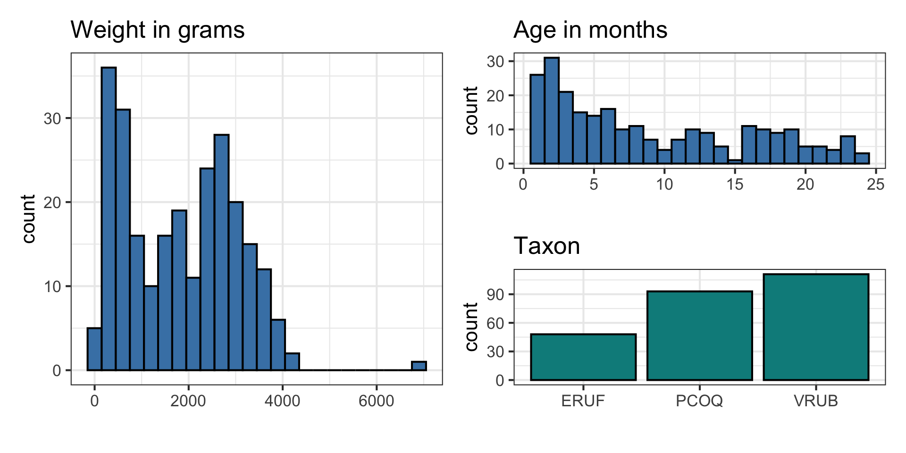
Bivariate EDA
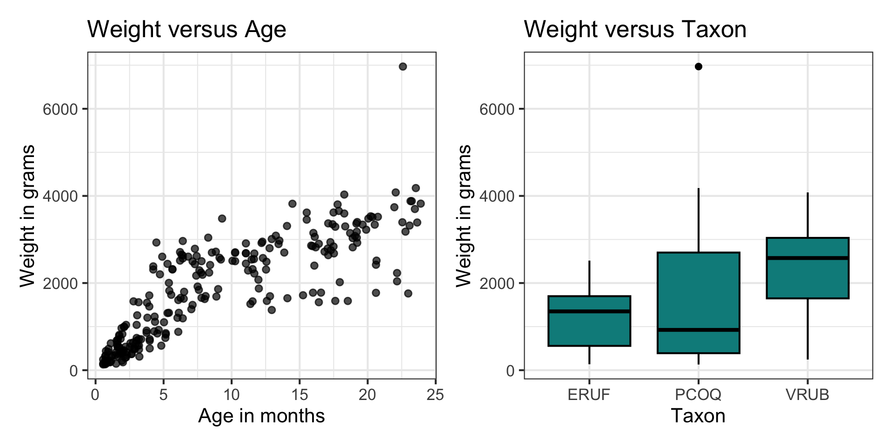
Fit model
| term | estimate | std.error | statistic | p.value |
|---|---|---|---|---|
| (Intercept) | -17.270 | 87.968 | -0.196 | 0.845 |
| age | 137.550 | 4.824 | 28.515 | 0.000 |
| taxonPCOQ | 463.997 | 94.728 | 4.898 | 0.000 |
| taxonVRUB | 999.722 | 92.148 | 10.849 | 0.000 |
Model conditions
Assumptions for regression
\[ \mathbf{y}|\mathbf{X} \sim N(\mathbf{X}\boldsymbol{\beta}, \sigma^2\mathbf{I}) \]
- Linearity: There is a linear relationship between the response and predictor variables.
- Equal variance: The variability about the least squares line is generally constant.
- Normality: The distribution of the errors (residuals) is approximately normal.
- Independence: The errors (residuals) are independent from one another.
After fitting a model, we check a set of conditions to evaluate whether these assumptions hold for the data.
Augment data set
lemurs_aug <- augment(lemurs_fit)# A tibble: 10 × 9
weight age taxon .fitted .resid .hat .sigma .cooksd .std.resid
<dbl> <dbl> <chr> <dbl> <dbl> <dbl> <dbl> <dbl> <dbl>
1 410 2.27 ERUF 295. 115. 0.0244 534. 0.000299 0.219
2 137 0.72 ERUF 81.8 55.2 0.0263 534. 0.0000745 0.105
3 206 0.69 PCOQ 542. -336. 0.0153 533. 0.00157 -0.635
4 185 1.05 PCOQ 591. -406. 0.0149 533. 0.00223 -0.768
5 373 2.66 PCOQ 813. -440. 0.0132 533. 0.00231 -0.831
6 200 0.76 ERUF 87.3 113. 0.0262 534. 0.000310 0.214
7 1861 9.01 ERUF 1222. 639. 0.0208 532. 0.00782 1.21
8 1634 8.02 ERUF 1086. 548. 0.0209 533. 0.00577 1.04
9 636 2.76 ERUF 362. 274. 0.0239 533. 0.00165 0.520
10 373 1.74 ERUF 222. 151. 0.0250 534. 0.000528 0.287Linearity
- Examine plot of residuals versus fitted (predicted) values
- Good practice to also check plots of residuals versus quantitative predictors
- Linearity is satisfied if there is no discernible pattern in the plots (i.e., points randomly scattered around \(\text{residuals} = 0\))
Linearity
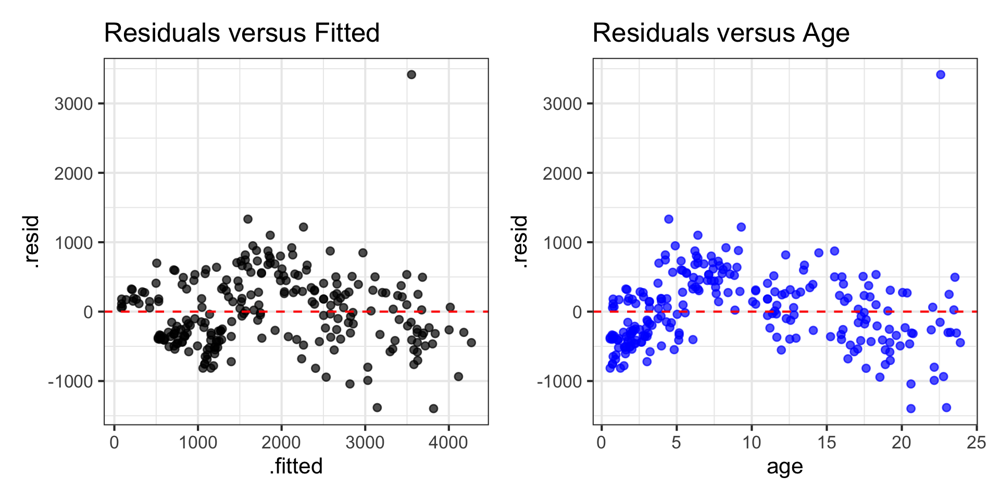
Equal variance
- Examine plot of residuals versus fitted (predicted) values
- Equal variance is satisfied if the vertical spread of the points is approximately equal for all fitted values
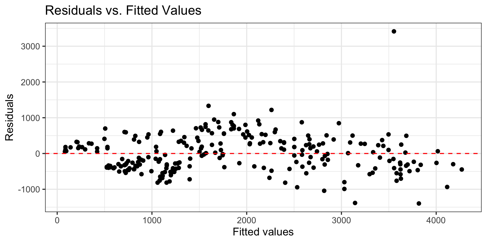
Normality
- Look at the distribution of the residuals
- Normality is satisfied if the distribution is approximately unimodal and symmetric.
- Even if normality is not satisfied, inference is robust for \(n > 30\)
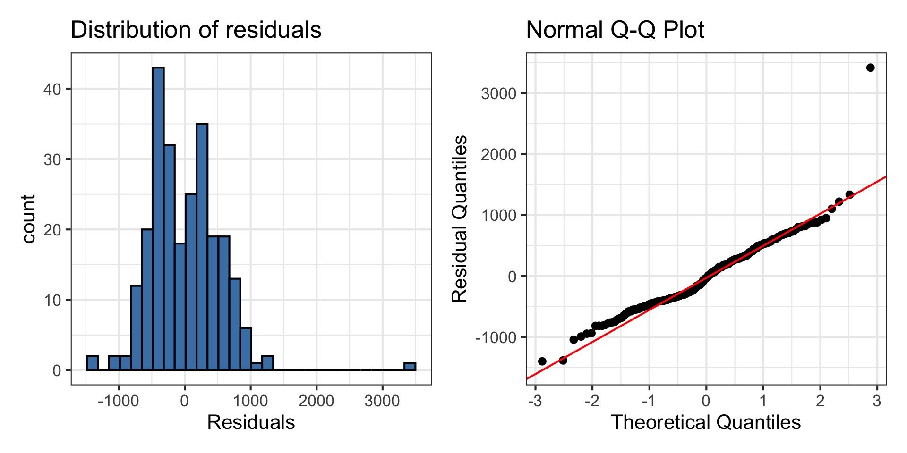
Independence
We can often check the independence condition based on the context of the data and how the observations were collected.
If the data were collected in a particular order, examine a scatterplot of the residuals versus order in which the data were collected.
If data has spatial element, plot residuals on a map to examine potential spatial correlation.
Can also check for dependence within subgroups that are not accounted for in the model
Independence
Let’s check whether there is unaccounted dependence by sex.
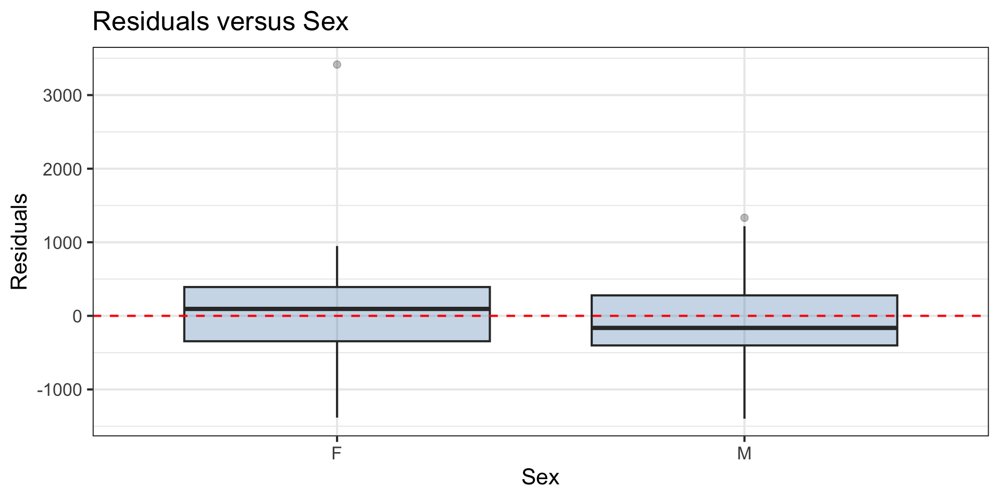
Model diagnostics
Influential point
An observation is influential if removing has a noticeable impact on the regression coefficients
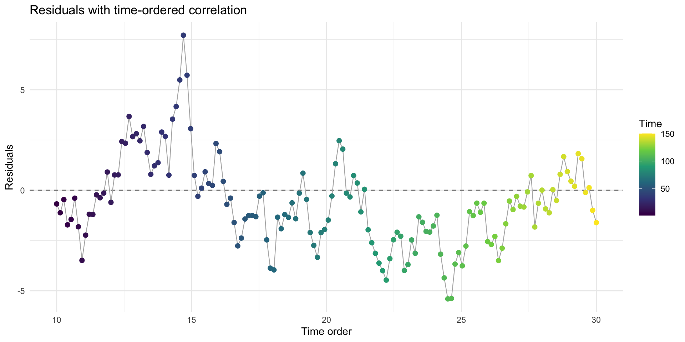
Influential points
- Influential points have a noticeable impact on the coefficients and their standard errors
- These points can sometimes be identified in a scatterplot if there is only one predictor variable
- This is often not the case when there are multiple predictors
- We will use measures to quantify an individual observation’s influence on the regression model
- leverage, standardized residuals, and Cook’s Distance
Model diagnostics in R
We get observation-level model diagnostics from augment() in R. We will use the following columns:
.hat: leverage.cooksd: Cook’s distance.std.resid: standardized residuals
# A tibble: 5 × 10
weight age taxon .fitted .resid .hat .sigma .cooksd .std.resid sex
<dbl> <dbl> <chr> <dbl> <dbl> <dbl> <dbl> <dbl> <dbl> <chr>
1 410 2.27 ERUF 295. 115. 0.0244 534. 0.000299 0.219 F
2 137 0.72 ERUF 81.8 55.2 0.0263 534. 0.0000745 0.105 F
3 206 0.69 PCOQ 542. -336. 0.0153 533. 0.00157 -0.635 F
4 185 1.05 PCOQ 591. -406. 0.0149 533. 0.00223 -0.768 M
5 373 2.66 PCOQ 813. -440. 0.0132 533. 0.00231 -0.831 F Cook’s Distance
Motivating Cook’s Distance
An observation’s influence on the regression line depends on
How close it lies to the general trend of the data
Its leverage
Cook’s Distance is a statistic that includes both of these components to measure an observation’s overall impact on the model
Cook’s Distance
Cook’s distance for the \(i^{th}\) observation is
\[ D_i = \frac{r^2_i}{p + 1}\Big(\frac{h_{ii}}{1 - h_{ii}}\Big) \]
where \(r_i\) is the standardized residual and \(h_{ii}\) is the leverage for the \(i^{th}\) observation
. . .
This measure is a combination of
How well the model fits the \(i^{th}\) observation (magnitude of residuals)
How far the \(i^{th}\) observation is from the rest of the data
Using Cook’s Distance
An observation with large value of \(D_i\) is said to have a strong influence on the predicted values
General thresholds .An observation with
\(D_i > 0.5\) is moderately influential
\(D_i > 1\) is very influential
Cook’s Distance
Cook’s Distance is in the column .cooksd in the output from augment()
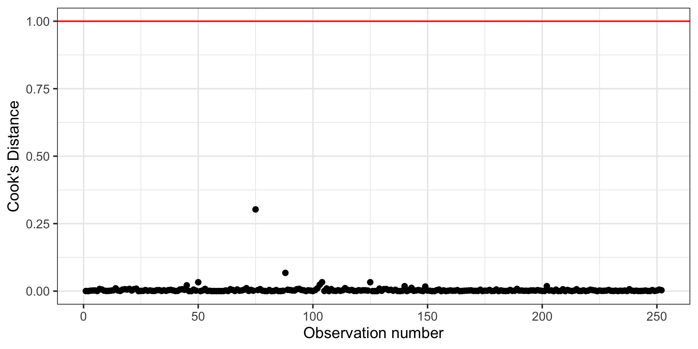
Comparing models
| Term | All obs | -Max(Cook’s D) |
|---|---|---|
| (Intercept) | -17.270 | 19.583 |
| age | 137.550 | 133.392 |
| taxonPCOQ | 463.997 | 423.287 |
| taxonVRUB | 999.722 | 1003.960 |
Model coefficients do not change much because there are no influential points in the data.
Leverage
Leverage
Recall the hat matrix \(\mathbf{H} = \mathbf{X}(\mathbf{X}^\mathsf{T}\mathbf{X})^{-1}\mathbf{X}^\mathsf{T}\)
We focus on the diagonal elements
\[ h_{ii} = \mathbf{x}_i^\mathsf{T}(\mathbf{X}^\mathsf{T}\mathbf{X})^{-1}\mathbf{x}_i \]such that \(\mathbf{x}^\mathsf{T}_i\) is the \(i^{th}\) row of \(\mathbf{X}\)
\(h_{ii}\) is the leverage: measures how far an observation’s predictor values are from the mean predictor values
- It measures how much \(\hat{y}_i\) changes when \(y_i\) changes, holding the values of the predictor constant
High leverage
The sum of the leverages for all points is \(p + 1\), where \(p\) is the number of predictors in the model . More specifically
\[ \sum_{i=1}^n h_{ii} = \text{rank}(\mathbf{H}) = \text{rank}(\mathbf{X}) = p+1 \]
The average value of leverage, \(h_{ii}\), is \(\bar{h} = \frac{(p+1)}{n}\)
An observation has high leverage if \[h_{ii} > \frac{2(p+1)}{n}\]
Lemurs: Leverage
h_threshold <- 2 * (3 + 1) / nrow(lemurs)
h_threshold[1] 0.03174603. . .
lemurs_aug |>
filter(.hat > h_threshold)# A tibble: 5 × 10
weight age taxon .fitted .resid .hat .sigma .cooksd .std.resid sex
<dbl> <dbl> <chr> <dbl> <dbl> <dbl> <dbl> <dbl> <dbl> <chr>
1 2515 20.6 ERUF 2823. -308. 0.0322 533. 0.00288 -0.588 F
2 2230 22.2 ERUF 3031. -801. 0.0353 531. 0.0215 -1.53 F
3 1776. 20.6 ERUF 2818. -1042. 0.0322 529. 0.0328 -1.99 F
4 1761 23.0 ERUF 3144. -1383. 0.0372 526. 0.0676 -2.65 F
5 2040 22.2 ERUF 3031. -991. 0.0353 530. 0.0328 -1.89 F Your turn
Which variable(s) will we use to examine why the observations have high leverage? Select all that apply.
Let’s look at the data
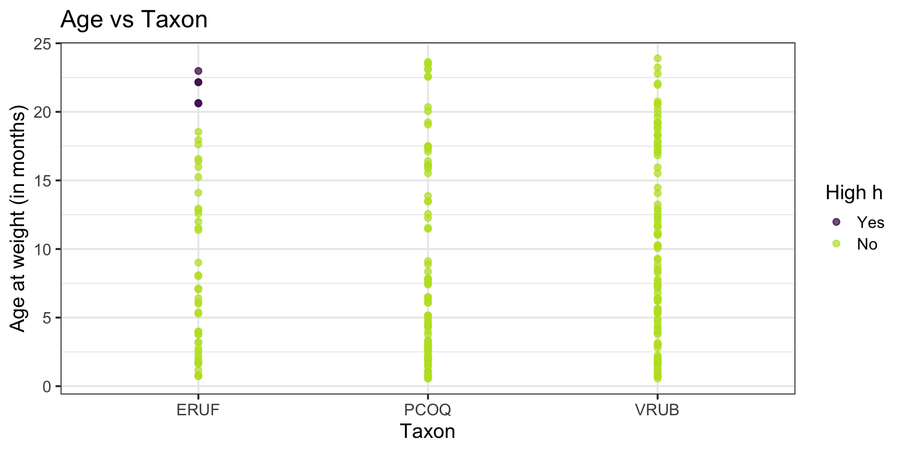
High leverage
If there is point with high leverage, ask
- ❓ Is there a data entry error?
- ❓ Is this observation within the scope of individuals for which you want to make predictions and draw conclusions?
- ❓ Is this observation impacting the estimates of the model coefficients? (Need more information!)
. . .
Just because a point has high leverage does not necessarily mean it will have a substantial impact on the regression. Therefore we need to check other measures.
Standardized residuals
Standardized residuals
What is the best way to identify outlier points that don’t fit the pattern from the regression line?
- Look for points that have large residuals
We can rescale residuals and put them on a common scale to more easily identify “large” residuals
Standardized residuals
The variance of the residuals is \(Var(\mathbf{e}) = \sigma^2(\mathbf{I} - \mathbf{H})\)
- The variance of the \(i^{th}\) residual is \(Var(e_i) = \sigma^2(1 - h_{ii})\)
The standardized residual (also called internally studentized residual) is the residual rescaled by its estimated variance
\[ r_i = \frac{e_{i}}{\sqrt{\hat{\sigma}^2(1 - h_{ii})}} \]
Using standardized residuals
We can use the standardized residuals in the plot of residuals versus predicted
- Use it to evaluate linearity, equal variance, and outliers
An observation is a potential outlier if its standardized residual has magnitude greater than 3

Using these measures
Standardized residuals, leverage, and Cook’s Distance should all be examined together
Examine plots of the measures to identify observations that are outliers, high leverage, and may potentially impact the model.
Diagnostic plots using gglm
Can make main diagnostic plots using gglm() in the gglm R package
library(gglm)
gglm(lemurs_fit)gglm documentation: https://graysonwhite.com/gglm/
Tip
You will need to install this package in the RStudio Docker containers.
Diagnostic plots using gglm
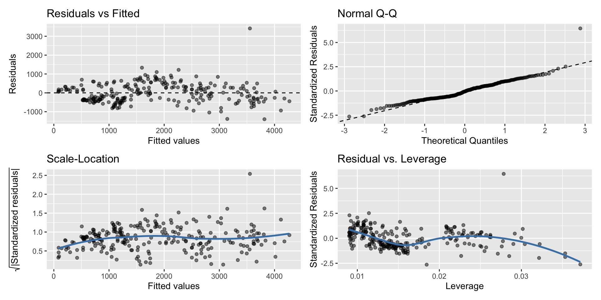
What to do with outliers/influential points?
First consider if the outlier is a result of a data entry error.
If not, you may consider dropping an observation if it’s an outlier in the predictor variables if…
It is meaningful to drop the observation given the context of the problem
You intended to build a model on a smaller range of the predictor variables. Mention this in the write up of the results and be careful to avoid extrapolation when making predictions
What to do with outliers/influential points?
It is generally not good practice to drop observations that ar outliers in the value of the response variable
These are legitimate observations and should be in the model
You can try transformations or increasing the sample size by collecting more data
A general strategy when there are influential points is to fit the model with and without the influential points and compare the outcomes
Multicollinearity
Data: Trail users
- The Pioneer Valley Planning Commission (PVPC) collected data at the beginning a trail in Florence, MA for ninety days from April 5, 2005 to November 15, 2005 to
- Data collectors set up a laser sensor, with breaks in the laser beam recording when a rail-trail user passed the data collection station.
# A tibble: 5 × 7
volume hightemp avgtemp season cloudcover precip day_type
<dbl> <dbl> <dbl> <chr> <dbl> <dbl> <chr>
1 501 83 66.5 Summer 7.60 0 Weekday
2 419 73 61 Summer 6.30 0.290 Weekday
3 397 74 63 Spring 7.5 0.320 Weekday
4 385 95 78 Summer 2.60 0 Weekend
5 200 44 48 Spring 10 0.140 Weekday Source: Pioneer Valley Planning Commission via the mosaicData package.
Variables
Response
volumeestimated number of trail users that day (number of breaks recorded)
Predictors
hightempdaily high temperature (in degrees Fahrenheit)avgtempaverage of daily low and daily high temperature (in degrees Fahrenheit)seasonone of “Fall”, “Spring”, or “Summer”precipmeasure of precipitation (in inches)
EDA: Relationship between predictors
We can create a pairwise plot matrix using the ggpairs function from the GGally R package
rail_trail |>
select(hightemp, avgtemp, season, precip) |>
ggpairs()EDA: Relationship between predictors
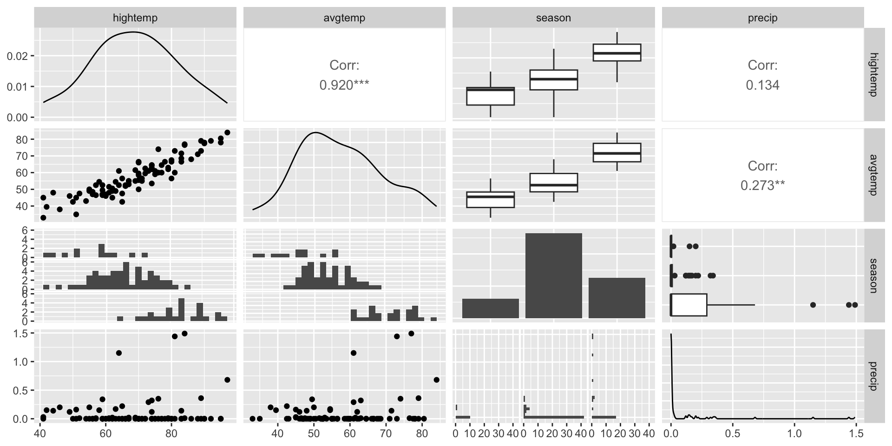
EDA: Correlation matrix
We can use corrplot() in the corrplot R package to make a matrix of pairwise correlations between quantitative predictors
correlations <- rail_trail |>
select(hightemp, avgtemp, precip) |>
cor()
corrplot(correlations, method = "number")EDA: Correlation matrix
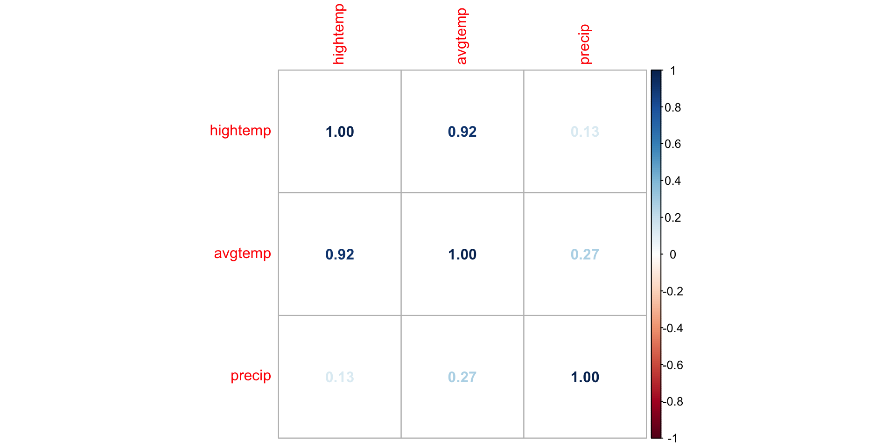
What might be a potential concern with a model that uses high temperature, average temperature, and precipitation to predict volume?
Multicollinearity
Multicollinearity
Ideally the predictors are orthogonal, meaning they are completely independent of one another
In practice, there is typically some dependence between predictors but it is often not a major issue in the model
If there is linear dependence among (a subset of) the predictors, we cannot find \(\hat{\boldsymbol{\beta}}\)
If there are near-linear dependencies, we can find \(\hat{\boldsymbol{\beta}}\) but there may be other issues with the model
Multicollinearity: near-linear dependence among predictors
Sources of multicollinearity
Data collection method - only sample from a subspace of the region of predictors
Constraints in the population - e.g., predictors family income and size of house
Choice of model - e.g., adding high order terms to the model
Overdefined model - have more predictors than observations
Source: Montgomery et al. (2021)
Detecting multicollinearity
- Recall \(Var(\hat{\boldsymbol{\beta}}) = \sigma^2(\mathbf{X}^\mathsf{T}\mathbf{X})^{-1}\)
- Let \(\mathbf{C} = (\mathbf{X}^\mathsf{T}\mathbf{X})^{-1}\). Then \(Var(\hat{\beta}_j) = \sigma^2C_{jj}\)
- When there are near-linear dependencies, \(C_{jj}\) increases and thus \(Var(\hat{\beta}_j)\) becomes inflated
- \(C_{jj}\) is associated with how much \(Var(\hat{\beta}_j)\) is inflated due to \(x_j\) dependencies with other predictors
Variance inflation factor
- The variance inflation factor (VIF) measures how much the linear dependencies impact the variance of the predictors
\[ VIF_{j} = \frac{1}{1 - R^2_j} \]
where \(R^2_j\) is the proportion of variation in \(x_j\) that is explained by a linear combination of all the other predictors
. . .
- When the response and predictors are scaled in a particular way, \(C_{jj} = VIF_{j}\). Click here to see how.
Detecting multicollinearity
Common practice uses threshold \(VIF > 10\) as indication of concerning multicollinearity (some say VIF > 5 is worth investigation)
Variables with similar values of VIF are typically the ones correlated with each other
Use the
vif()function in the rms R package to compute VIF
library(rms)
trail_fit <- lm(volume ~ hightemp + avgtemp + precip, data = rail_trail)
vif(trail_fit)hightemp avgtemp precip
7.161882 7.597154 1.193431 How multicollinearity impacts model
Large variance for the model coefficients that are collinear
- Different combinations of coefficient estimates produce equally good model fits
Unreliable statistical inference results
- May conclude coefficients are not statistically significant when there is, in fact, a relationship between the predictors and response
Interpretation of coefficient is no longer “holding all other variables constant”, since this would be impossible for correlated predictors
Dealing with multicollinearity
Collect more data (often not feasible given practical constraints)
Redefine the correlated predictors to keep the information from predictors but eliminate collinearity
- e.g., if \(x_1, x_2, x_3\) are correlated, use a new variable \((x_1 + x_2) / x_3\) in the model
For categorical predictors, avoid using levels with very few observations as the baseline
Remove one of the correlated variables
- Be careful about substantially reducing predictive power of the model
Rail Trail
We will keep either avgtemp or hightemp in the model.
| Model | rsq | rmse |
|---|---|---|
| keep avtemp | 0.314 | 105.015 |
| keep hightemp | 0.438 | 95.051 |
Which variable will you keep in the model?
Original versus final model
Original model
| term | estimate | std.error |
|---|---|---|
| (Intercept) | -15.812 | 54.594 |
| hightemp | 10.247 | 2.063 |
| avgtemp | -5.278 | 2.442 |
| precip | -118.759 | 41.681 |
Model with hightemp
| estimate | std.error |
|---|---|
| -31.520 | 55.238 |
| 6.118 | 0.794 |
| NA | NA |
| -153.261 | 39.307 |
Recap
Model diagnostics
Introduced multicollinearity and how it impacts a model
Before next class
- Complete Lecture 16 prepare
References
Montgomery, Douglas C, Elizabeth A Peck, and G Geoffrey Vining. 2021. Introduction to Linear Regression Analysis. John Wiley & Sons.